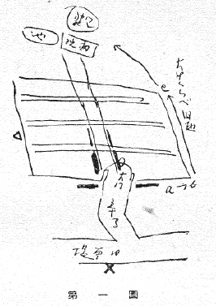
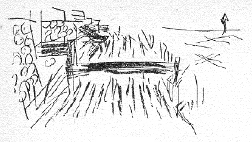
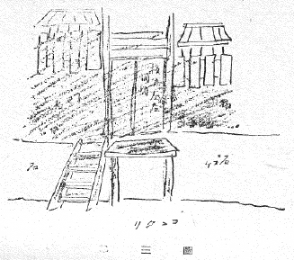

山川秀峰 大兄
この便遅延失礼。矢来町より御指図につき早速ハネ橋について誌します。実はぼくの見おぼえだけでは昔のことでもあるし危険と考へ、今日実地見聞をなし、土地の人にも聞いて、大体自信がつきました。
さて、ハネ橋といつぱ――
垢ぬけのせし三十あまりの年増、小ざつぱりとせし唐棧ぞろひに紺足袋はきて、雪駄ちやらちやら忙しげに横抱きの小包は問はでもしるし、茶屋の棧橋とんと沙汰して、廻り遠やこゝからあげまする、誂へものの仕事やさんとこのあたりに言ふぞかし……
これは一葉のたけくらべの本文で、文中の「茶屋の棧橋とんと沙汰して」とあるのが問題のものです。御承知の（といつてはシツレイかどうか）大門を入つて左右の太い斜線が引手茶屋なれども、これへのハネバシは大門外の左右の太線（第一図）の位置からつくといふことになります。
昔いろはの第九支店（浅草区地方今戸町九十三番地）が×の位置にあつた。そのころ△位置あたりのチヤチなはねばしをぼくは知つてゐたのでしたが、それはほとんどドブのふたの如く、長さも短かくて面白くありません。思ふにハネバシとしては、これはすでに末期症状のものでしたらう。
はねバシらしいはねバシは、所詮一葉ゑがくところの、大音寺前寄りの方でせう、こゝは（ｂ―ｃ）今行つてもそゞろに地形でわかるが道路から家へと一たん土台が石垣積みになつてゐて、石垣の高さはぼくのせい位あります。といふのが廓の内外へかけてこゝに截然と段階があつたので、この下のさかひのところを、水が流れてゐたわけです。（今はコンクリートですつかり埋めてあつて、この上をわれわれが歩いてゐるのです）
此の土地に深い（おとり様の境内に父祖数代住んでゐる）谷古さんといふ人からいつぞやきいた処では、この溝川（即ちはねバシかゝる処）が昔は幅九尺もあつた、それで、廓内から一たん水中へさんばしやうのものを出しつゝその先へハネバシ（板）をかけて、向うへとゞかせたもので、岸はシガラミだつたとのこと。
遠見はタンボ。却々風情のあつたものだといふことです。
図のやうなものでせう。（第二図）

ところが、星移り月変るうちにですな、廓が段々段々とこの溝川を侵蝕して膨脹し、流れを狭くしたといふのです。今日土地のとしよりに聞いたところでは、ａ―ｂ―ｃ約一間ぐらゐの流れだつたとのことです。
この通りに小態な額縁屋があつたので、そこの老人に聞きました。六十以上と見える人。わざわざ額縁を一つ買つたから、モトデがかゝつてゐるわけ也。打見たる処この界隈の家々の背は、家と家のしや合ひの木戸から段々にて今でもまるで川へ下るが如き仕組にしてあるものもあれば、（恐らくこれは昔のまゝの仕組ならん）、勝手口とおぼしきガラス戸へ往来のコンクリートからハシゴのかけてあるのもある。之等はハシゴのこつちにはねバシがあれば――往来のコンクリートは元々そこが流れであるから――一葉の文の「とんと沙汰して、廻り遠やこゝからあげまする」をそのまま思はせるものである。
要するに問題は、廓内の地盤が高い、そこから廓外の低きに向つてハネバシを操作するといふ点が、肝要となります。スケッチはすべてｂ―ｃの、ドブの幅一間位ありしといふところにて写しました。

こゝに寛永年間の新吉原図あり、略示するに、周囲の黒線が下水です、原図もこのくらゐの割にして太く描いてあるが、いかさまこれが内部から外へ外へと※［＃「┼」の上下左右に外向きに矢印の頭を付けた記号、144-16］発展した感じはわかる。そして廓内の家が下水へぴつたり接近した時に、ハネバシを生じた筈、その上猶川幅を縮小して行つて、現在に及ぶ歴史でせう。
○ハネバシは昼間は大体あがつてゐた。
○ハネバシは廓内から廓外への捷路の専用門であつて、廓外から廓内への用には必ずしも用ゐられぬ。廓内からそれを渡して外へ用事に出た時など、かけつぱなしになつたことはあらうけれど。
○くるわの各門には外界に対して石だたみの小橋がある。しかし、この門は平常閉まつてゐたのである。
ハネバシは一つの戸板だと思へばいゝと言ふことです。昔は廓外地域は現在よりもなほ一層低かつたので、この低きに高かつたところからハネバシを渡す便を計つて、向う岸の溝川のふちに、俎板の如き橋受けがあつたといふことです、これに対して、真向うの家なり路次なりからハネバシをわたしてくる、それには橋の先端にツナが付けてあつて、ハシを渡さんとする時これを持つて向う岸へ板をストンと渡す操作をする。
この個所のトリツキは、古老も、さあ、と言つて首をかしげてゐたが、たゞ立てかけてあるのもあつたやうだ、と言つてゐました。恐らく適宜カンガイ止め等もありしことでせう。
そして、用なき時にはツナにて引上げておく。だから廓外からは勝手に渡れぬわけです。されば少年時ぼくが見なれた△個所のハネバシは、両岸地形の差少なれば（それにドブも狭いから）手で持ち上げる式のフタに過ぎなかつたものでせう。
ドブフタの上で見得を切る手もあるまい、しかし大兄、ハネバシの上でチヨンなんてのは、元々余りいゝ手でありません。
以上を以つて大体よろしく万々御想像あつて御作り上げの程念じます。
またこのガクモンは不日重ねて聞き込みでもあつたら又再報します、矢来先生には貴辺よりくれぐれもよろしく御鶴声の程。実際こんなことも、今の中にベンキヨウしとかないと、なくなりますからネ。
十四年十一月十七日
木生
（昭和二十三年十月補修）
これは山川君がある舞踊の舞台装置について最後のしぐさがハネバシの上できまつて幕になるといふ一場を扱ふにつき、ハネバシのことを鏑木さんに聞いたところが、鏑木さん（矢来先生）から、それは木村の方が知つてゐるだらうといふので、ぼくへ廻つて来た問題の――解答である。右の文章絵画のまゝ急ぎ山川君あての手紙に認めたのを、こゝに採録するものです。この由来がわからないと諒解しにくい節々が文中にあるので、添記します。